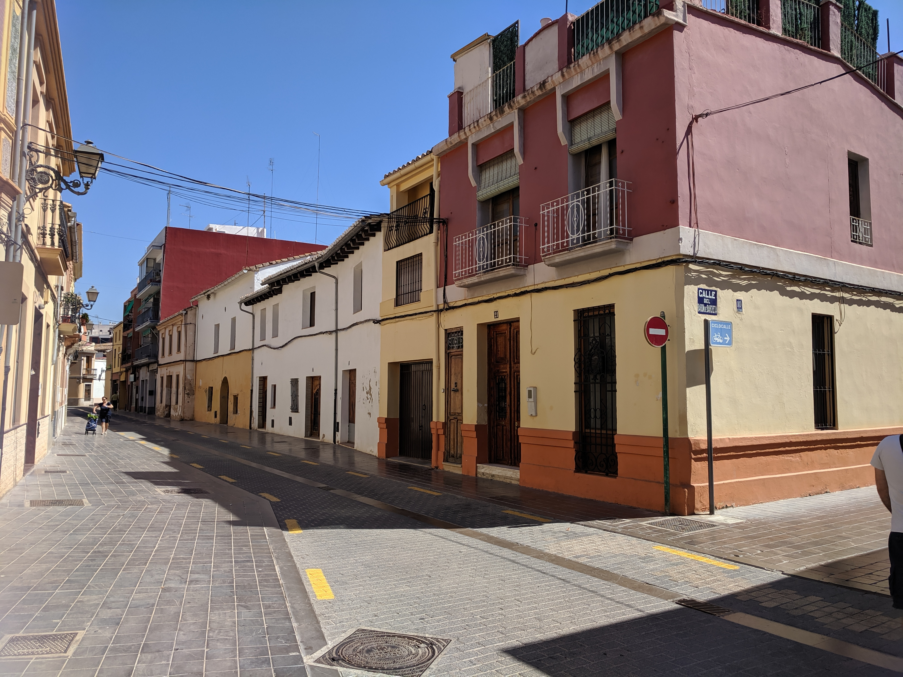

Mennään uimaan!
Raitiovaunulla 4 pääset asunnon edestä suoraan kuuluisalle Malvarrosan rannalle (rantaeväät kannattaa hakea matkan varrelta El Cabanyalin kauppahallista). Kesäkuukausina on avoinna myös Benicalapin puiston maauimala n. 15 min kävelymatkan päässä Villa Hillasta.
